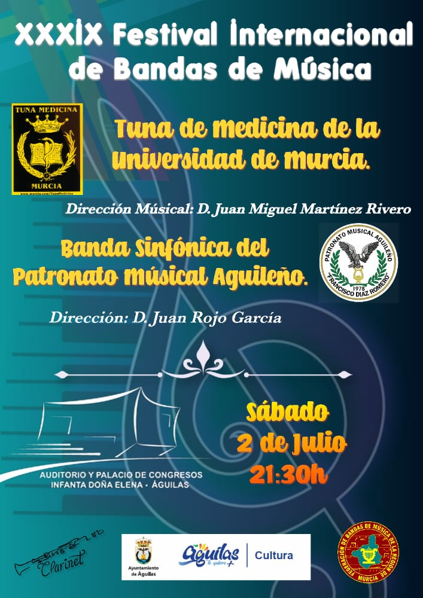

XXXIX FESTIVAL INTERNACIONAL DE BANDAS DE MUSICA (AGUILAS)

Después de 7 años volvemos al Auditorio y Palacio de Congresos Infanta Doña Elena.
Qué auténtico privilegio tocar en un emplazamiento tan extraordinario en primera línea de playa, un auditorio moderno y acogedor, y acompañados por una banda de música encantadora y de una calidad superlativa.
Ofrecimos una actuación muy variada, con boleros, música andina, rancheras, zarzuela, ópera, canciones de tuna... y todo gracias a la magnífica dirección musical de Juan Rojo García, de la Banda del Patronato que está a un altísimo nivel, y por supuesto de nuestro director musical Don Fulano.
Todo el evento fue posible gracias a nuestro compañero Don Petronio, conocido en Aguilas como el Tuno Marinero, el cual ya es un habitual en interpretar todo tipo de canciones con la Banda del Patronato y su magnífico director.
También fue posible gracias al Ayuntamiento de Aguilas y a su Consejería de Cultura, que apuesta por la música como arte y disciplina para todas edades y géneros.
Aguilas, paraíso de luz y alegría, paraíso del mediterraneo, esperamos ser invitados próximamente.
PROGRAMA OFICIAL XXXIII CERTAMEN INTERNACIONAL DE TUNAS COSTA CALIDA - CIUDAD DE MURCIA
Lunes 18 de abril de 2022
22:00 h - Gran gala inaugural del XXXIII Certamen Internacional de Tunas "Costa
Cálida – Ciudad de Murcia" en el Teatro Romea de Murcia, presentada por Juan Manuel
Piñero.
Investidura del "Gran Maestre" a la Facultad de Medicina de la Universidad de Murcia.
Presentación como "Madrina" del Certamen de Dña. Marta Garaulet Aza.
Organizan: Asociación Cultural Certamen Internacional de Tunas “Costa Cálida –
Ciudad de Murcia” y Tuna de la Facultad de Medicina de la Universidad de Murcia
Patrocinan: Ayuntamiento de Murcia, Estrella de Levante, Instituto de las Industrias
Culturales y de las Artes ICA.
*La organización se reserva el derecho de alterar o modificar parcial o totalmente la programación.*